Embedded control · model-based design
A two-wheeled concept car that drives a closed course under its own power. Requirements before architecture, a plant model before any control law, generated embedded C on the target, and three escalating test stages — model, processor, road. Built solo, end to end.
01 — What it is
A differential-drive vehicle on an Arduino Nano 33 IoT with a motor carrier, wheel encoders as the only feedback, and a control stack developed as a model and deployed as generated C. It follows a taped square course without a tether, a host PC, or a radio link — every command and correction is computed on the board.
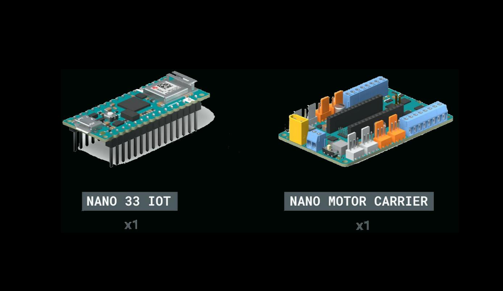
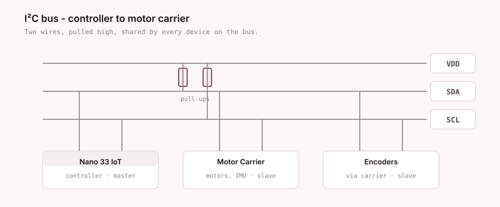
02 — Skills
| Skill | Where it shows up | Tools |
|---|---|---|
| Model-based design | Plant model and control law developed and verified as models before any code was generated | Simulink, MATLAB |
| State machine design | Route sequencing as a Stateflow chart with relative targets and guard conditions on sensor feedback | Stateflow |
| Embedded C | Production code generated for a SAMD21 target and run untethered on the board | MATLAB Coder, Embedded Coder |
| Control engineering | Two PID loops — distance and heading — tuned empirically against a measured plant | Simulink Control Design |
| System identification | Motor characterised by measured sweep rather than datasheet values, including its dead band | MATLAB |
| Test strategy | Three-stage verification ladder, each stage removing one simulation so failures stay attributable | MiL / PiL / run-on-board |
| Requirements engineering | 17 traceable requirements, each bound to a verification activity before implementation | Structured spec |
| CI / automation | Verification retrofitted as a build: static analysis and a requirements traceability gate on a controller defined entirely as code | Jenkins, JCasC, Docker, cppcheck |
The last row is later work, built on top of the project — see the pipeline page.
03 — Plant
A controller is only meaningful against a plant. Differential drive gives you two independent wheel velocities; everything the vehicle can do — drive straight, arc, rotate in place — falls out of their sum and difference.
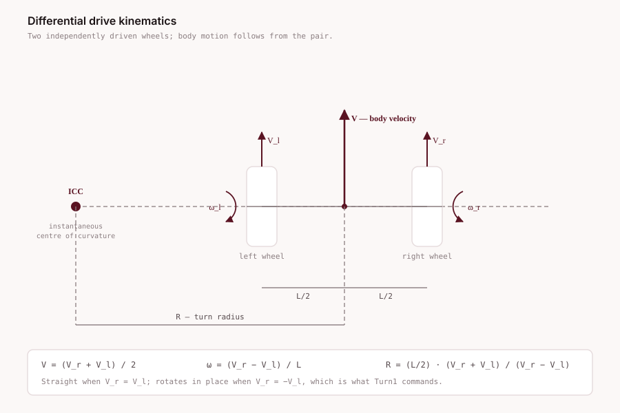
V_r = −V_l case, which is exactly what the turn state commands.The motors were then characterised by measurement rather than datasheet. This matters: the response is not linear, and there is a dead band either side of zero where a PWM command produces no rotation at all. A control law tuned without knowing that will integrate error while the wheels sit still.
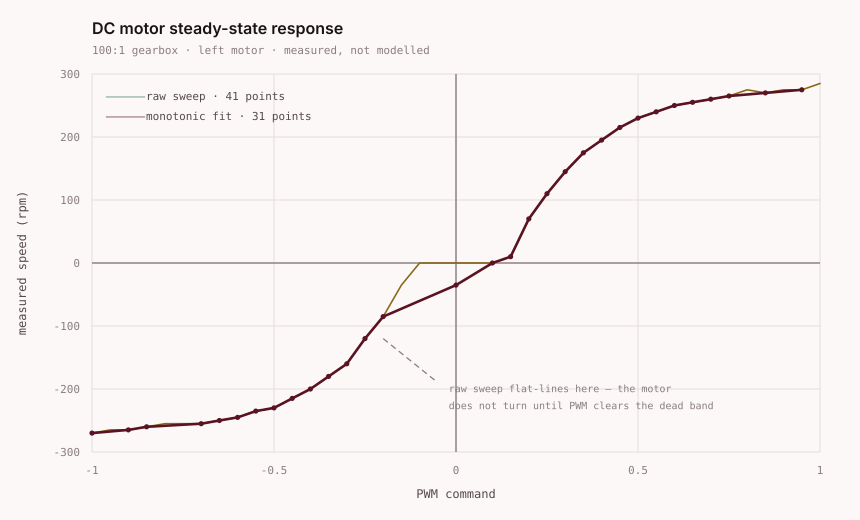
motorResponse data — 41-point raw sweep, 31-point monotonic fit.04 — Control
Open loop moves the car; closed loop is what makes it arrive. Wheel encoders give measured distance and heading, and two PID controllers drive those errors to zero. There is no map, no external reference, and no absolute position sensor — the vehicle knows only how far its wheels have turned.
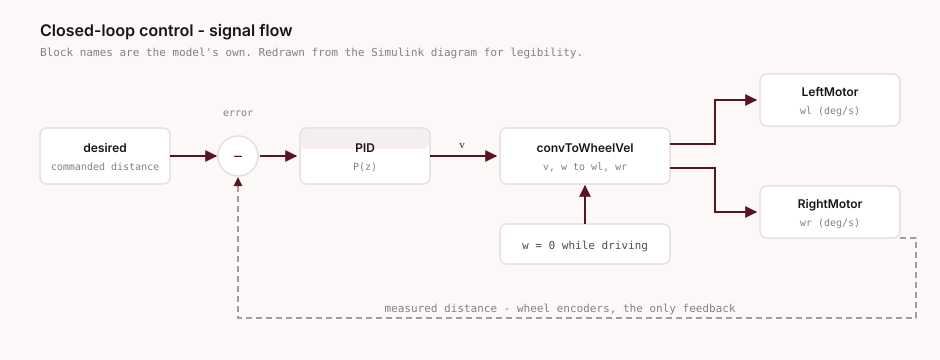
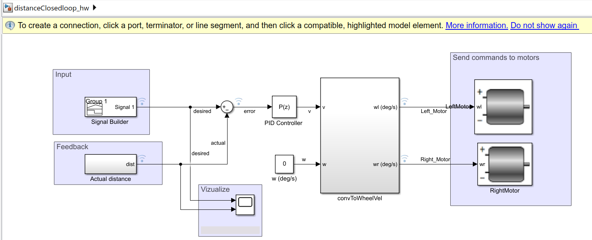
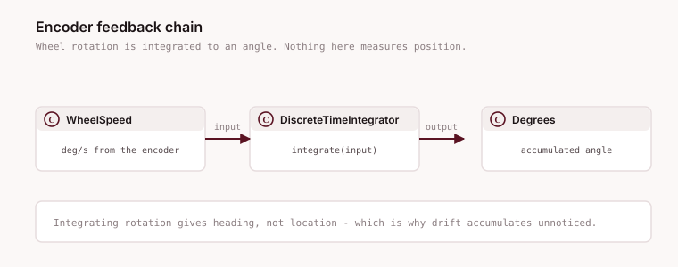
05 — Sequencing
The course is not a trajectory file. It is a Stateflow chart that issues velocity and rotation commands, waits on guards computed from encoder feedback, and advances. The targets are relative — desDist = dist + 30, desAng = ang + 90 — so four repetitions of one four-state cycle close a square, and the same chart scales to any polygon.
v = 0 in both.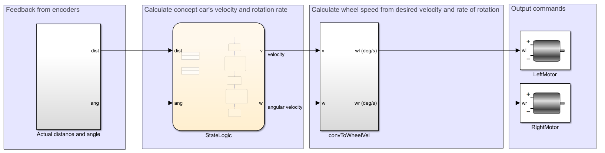
v and w out, converted to wheel speeds and issued to both motors. Screenshot from the model itself.06 — Interfaces
The vehicle library was used as supplied — sensors, encoders, motors and their managers. Knowing where the boundary sits is the point: everything above it is mine, everything below it is vendor code I did not modify.
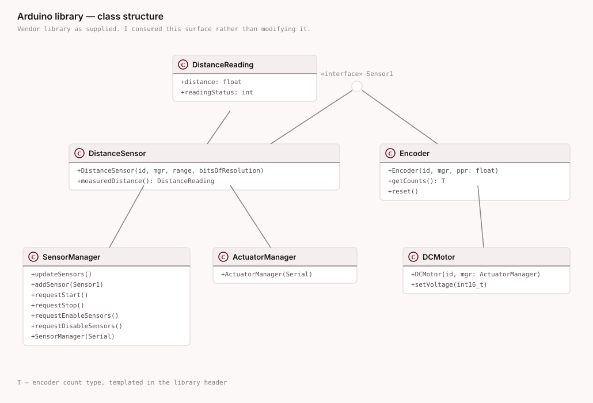
Encoder::getCounts() is the single source of feedback for both control loops.07 — Verification
The same driving function is tested three times. Each stage replaces one simulated element with the real one, so when a stage fails you know which layer introduced the failure. This is the part that transfers to any embedded programme.
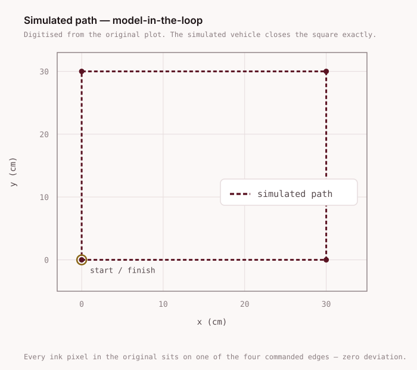
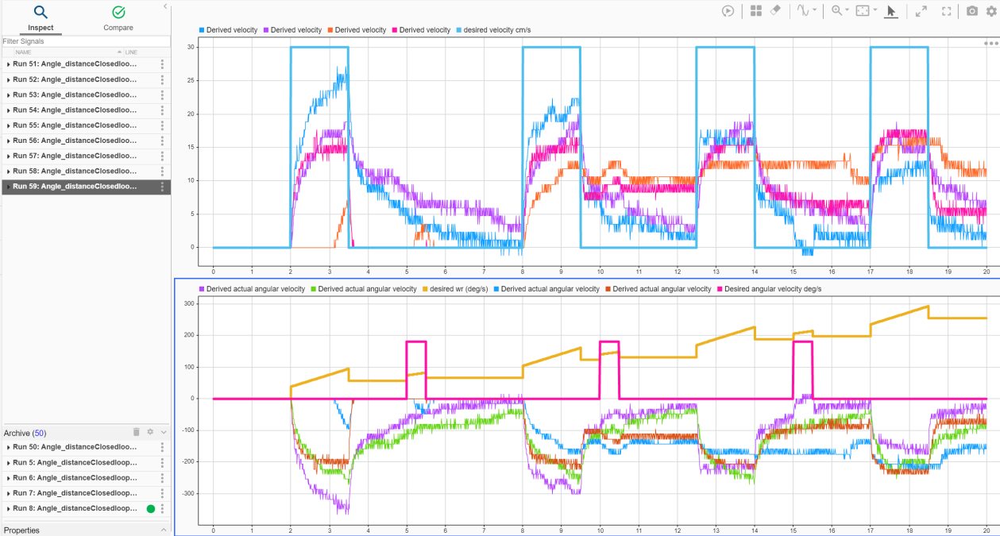
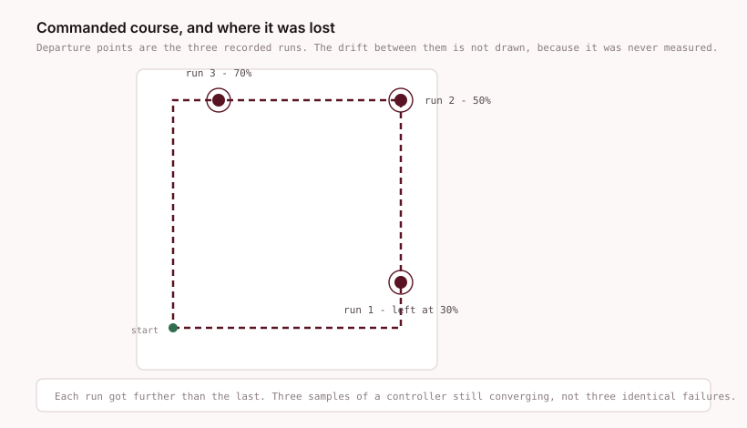
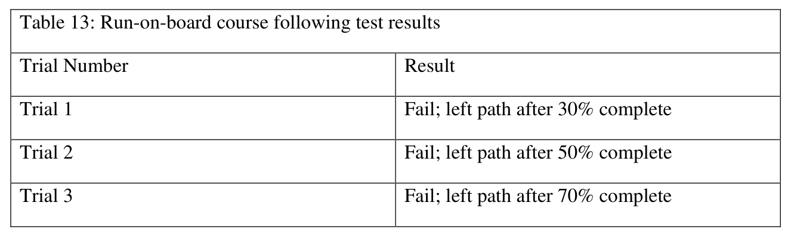
08 — Judgement
Three untethered runs failed. They were preceded by 59 tethered tuning trials, and the failures came progressively later — 30%, then 50%, then 70%. That is not a controller that does not work. That is a controller converging, sampled three times.
The binding constraint was never the control law. It was that every iteration needed a person to change a constant, rebuild, reflash and walk a track — so the project could afford 59 attempts at the cheap stage and three at the expensive one. The honest diagnosis is iteration cost, and the honest fix is automation, not cleverness.
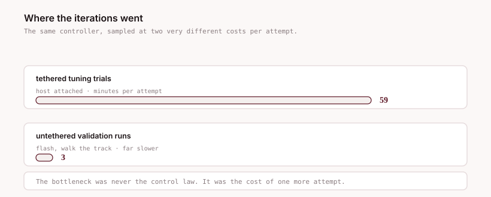
The root cause of the drift itself is structural: wheel encoders measure rotation, not position. Dead reckoning integrates error and has no way to notice the vehicle has left the course. Any amount of PID tuning improves the constant; none of it closes that gap.
| Change | What it addresses |
|---|---|
| Retune the integral term | Drift accumulated across the course rather than appearing at once |
| Add a camera and image processing | Gives an absolute position reference so the vehicle can detect that it has left the track |
| Use the on-board Wi-Fi for telemetry | The radio went unused. Untethered trials would become as cheap as tethered ones — which is the actual bottleneck |
The third row is where the follow-on work went: the verification stages are now a build that runs on every change. That is the pipeline page →